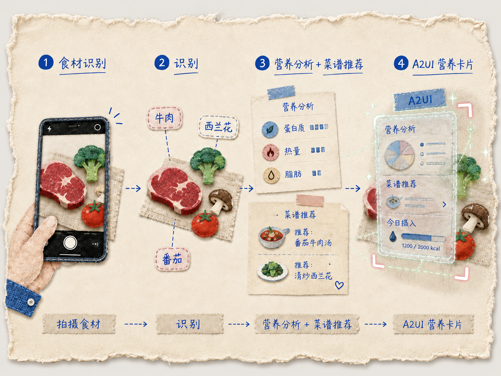
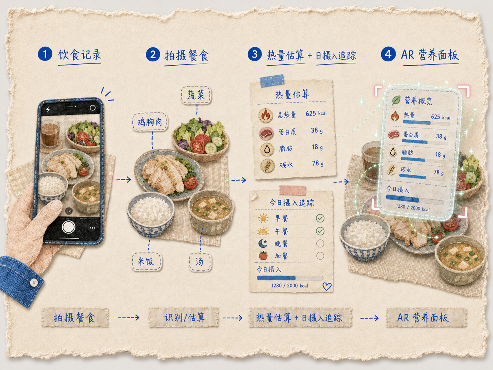
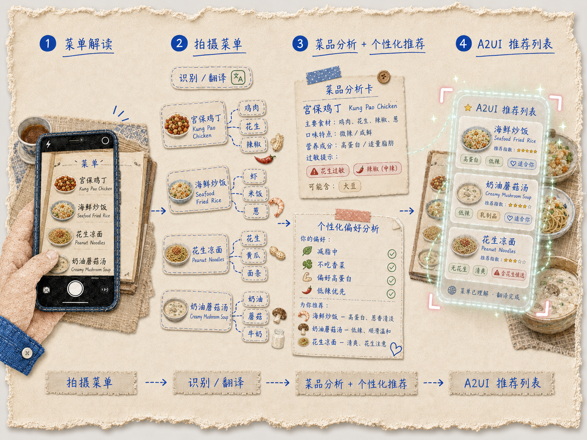
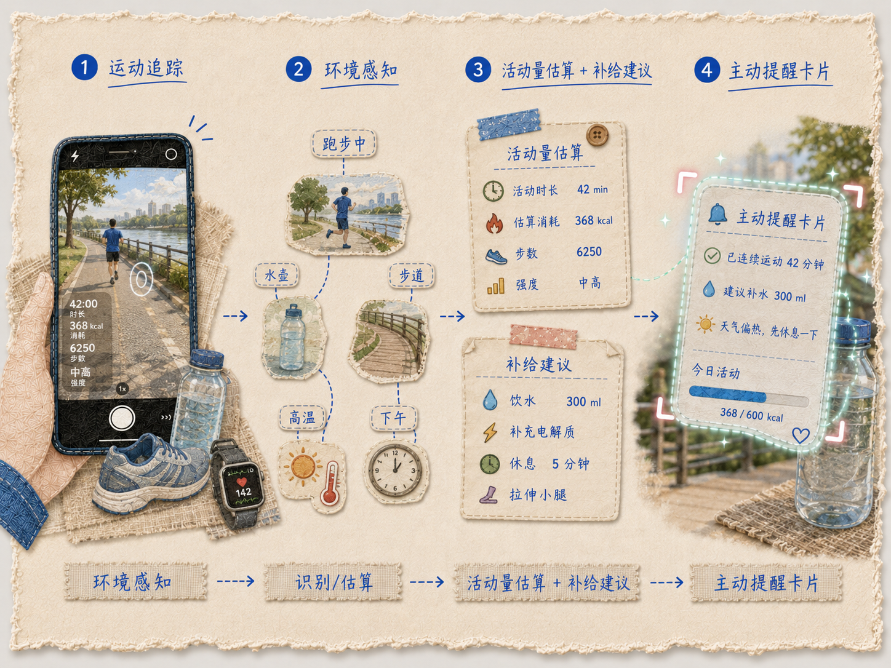
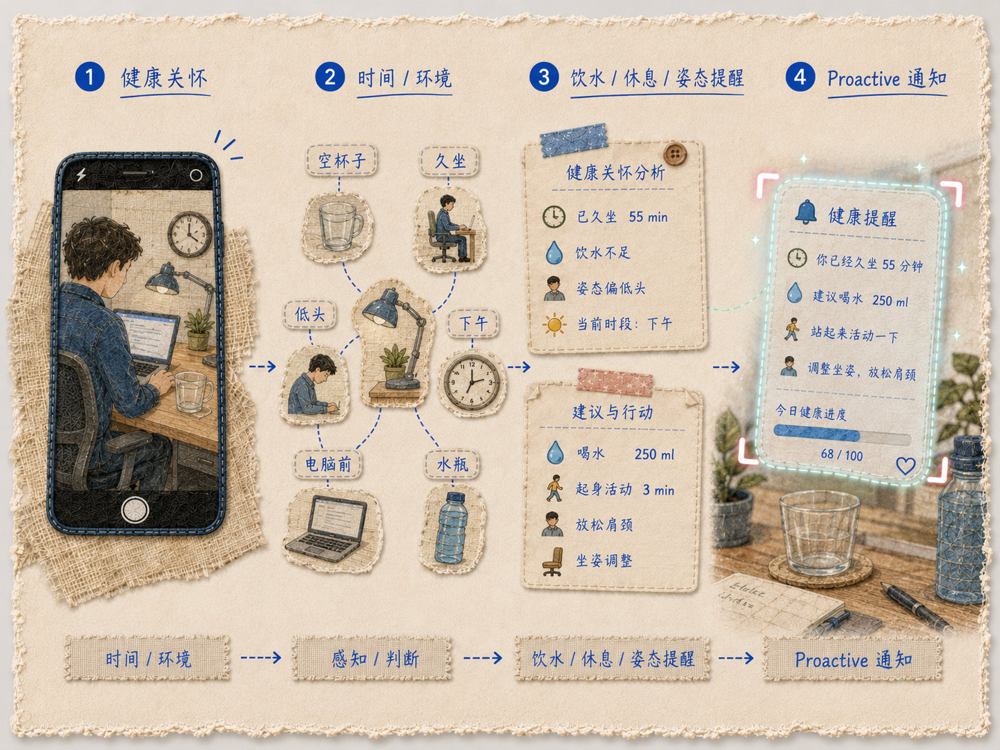
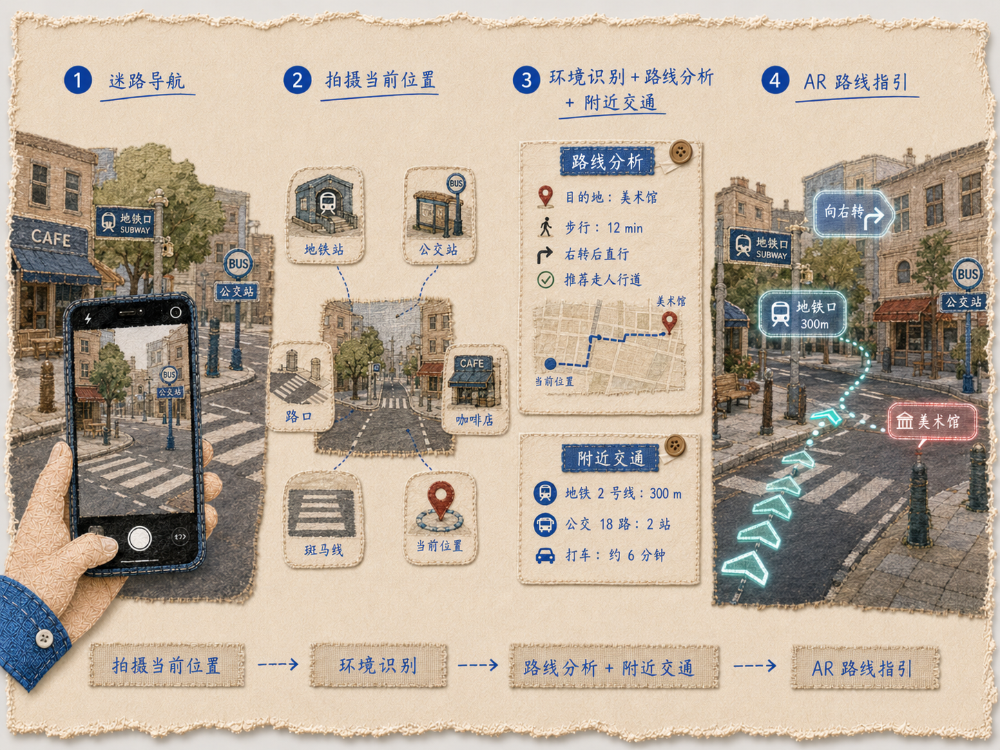
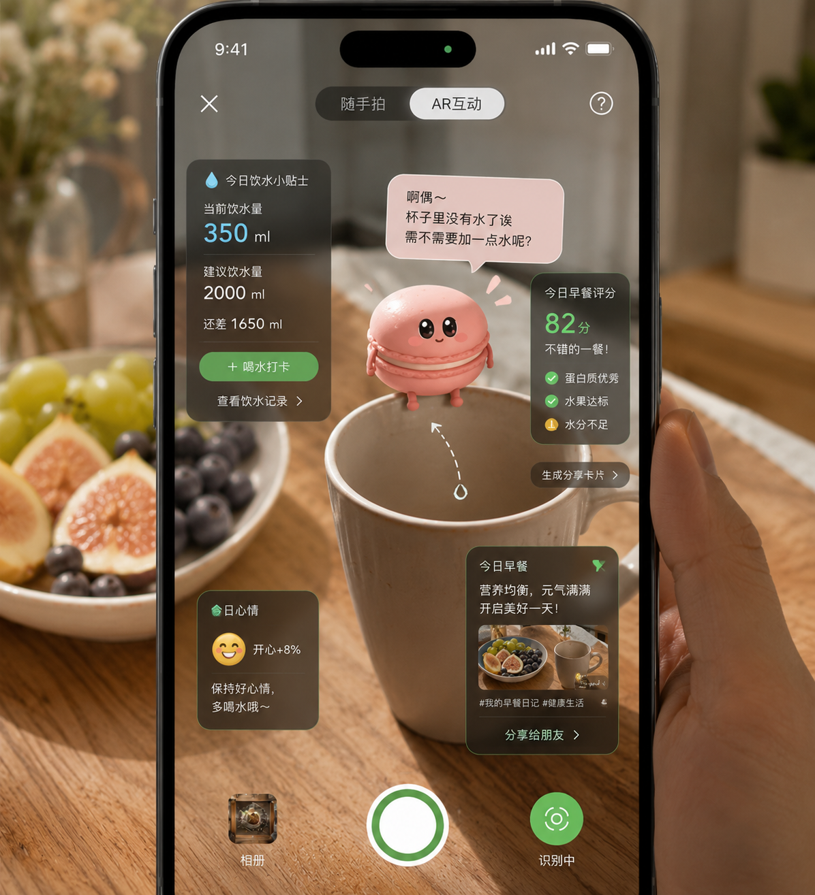

| 场景 | 输入 | Tool Use 链路 | A2UI 输出 |
|---|---|---|---|
| 🥩 食材识别 | 拍摄食材 | 识别 + 营养分析 + 菜谱推荐 | A2UI 营养卡片 |
| 🍱 饮食记录 | 拍摄餐食 | 热量估算 + 日摄入追踪 | AR 营养面板 |
| 📋 菜单解读 | 拍摄菜单 | 菜品分析 + 个性化推荐 | A2UI 推荐列表 |
| 🏃 运动追踪 | 环境感知 | 活动量估算 + 补给建议 | 主动提醒卡片 |
| 💧 健康关怀 | 时间/环境 | 饮水/休息/姿态提醒 | Proactive 通知 |
| 🧾 海外记账 | 拍摄外文发票 | OCR 翻译 + 金额换算 + 逐项匹配 | AR 标注对应关系 |
| 🗺️ 迷路导航 | 拍摄当前位置 | 环境识别 + 路线分析 + 附近交通 | AR 路线指引 |
| 维度 | 半双工 (传统) | 全双工 (Macaron Lens) |
|---|---|---|
| 交互节奏 | 用户发送 → 等待 → 回复 | 双向实时流，边说边看 |
| UI 更新 | 整页刷新 | 流式局部更新 (A2UI) |
| 输入通道 | 文字单通道 | Camera + Voice + Gesture 多通道并行 |
| Agent 角色 | 被动应答器 | 主动感知者 + 实时反馈者 |

| 拖动到… | Macaron 感知 | 实时反馈 |
|---|---|---|
| 🥤 水杯上 | 感知杯中水量 | "啊偶～杯子没水了诶，要不要喝一点？" |
| 🍽️ 餐盘旁 | 识别食物内容 | 实时热量分析 + 营养建议 |
| 📖 书本上 | 感知学习状态 | "又进步了一点点呢～" |
| 📋 菜单上 | 感知菜品列表 | 智能推荐搭配方案 |
| 📱 手机角落 | 感知"不需要我" | 安静待命，不主动打扰 |